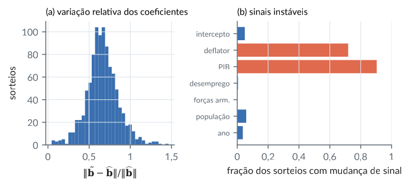
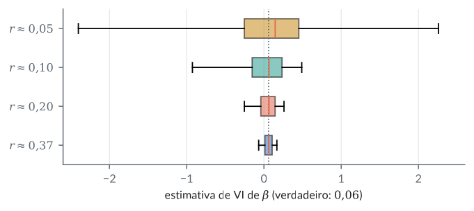
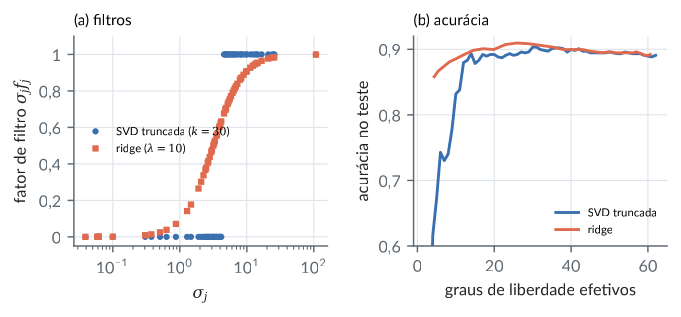
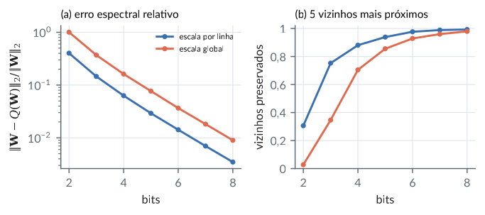
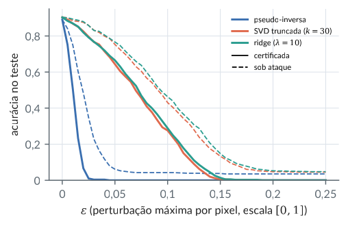

7. Normas matriciais, condicionamento e a inversa de Moore–Penrose
Material reprodutível do Capítulo 7 do livro.
Exemplos
Normas matriciais: fórmulas das normas induzidas, Frobenius e raio espectral
R/cap07/01_normas.R
# Cap. 7: Normas matriciais: fórmulas das normas induzidas, Frobenius e raio espectral
A <- matrix(c(1, -2, 3,
0, 4, -1,
2, 1, 1), 3, byrow = TRUE)
s <- svd(A)$d
c(norma1 = norm(A, "O"), max_soma_colunas = max(colSums(abs(A))),
norma_inf = norm(A, "I"), max_soma_linhas = max(rowSums(abs(A))),
norma2 = norm(A, "2"), sigma1 = s[1], frobenius = norm(A, "F"), raiz_soma_sigma2 = sqrt(sum(s^2)))
c(raio_espectral = max(Mod(eigen(A)$values)), norma2_inversa = norm(solve(A), "2"), um_sobre_sigma_min = 1 / min(s))
# O máximo de ||Ax||/||x|| sobre 10 000 vetores ao acaso nunca passa de sigma_1
source(file.path("R", "comum", "gerador.R")); g <- gerador(70)
X <- matriz_normal(g, 3, 10000)
max(sqrt(colSums((A %*% X)^2)) / sqrt(colSums(X^2)))
# Invariância por matrizes ortogonais
Q1 <- qr.Q(qr(matriz_normal(g, 3, 3))); Q2 <- qr.Q(qr(matriz_normal(g, 3, 3)))
c(norma2 = norm(Q1 %*% A %*% Q2, "2"), frobenius = norm(Q1 %*% A %*% Q2, "F"), norma1 = norm(Q1 %*% A %*% Q2, "O"))Saída
norma1 max_soma_colunas norma_inf max_soma_linhas
7.000000 7.000000 6.000000 6.000000
norma2 sigma1 frobenius raiz_soma_sigma2
5.158098 5.158098 6.082763 6.082763
raio_espectral norma2_inversa um_sobre_sigma_min
4.192582 1.060125 1.060125
[1] 5.157732
norma2 frobenius norma1
5.158098 6.082763 7.580451python/cap07/01_normas.py
"""Cap. 7: Normas matriciais: fórmulas das normas induzidas, Frobenius e raio espectral."""
import sys
from pathlib import Path
import numpy as np
sys.path.insert(0, str(Path(__file__).resolve().parents[1]))
from comum.gerador import Gerador # noqa: E402
A = np.array([[1.0, -2, 3], [0, 4, -1], [2, 1, 1]])
s = np.linalg.svd(A, compute_uv=False)
print(f"||A||_1 = {np.linalg.norm(A, 1):.6f} (máx. soma de colunas {np.abs(A).sum(0).max():.6f})")
print(f"||A||_inf = {np.linalg.norm(A, np.inf):.6f} (máx. soma de linhas {np.abs(A).sum(1).max():.6f})")
print(f"||A||_2 = {np.linalg.norm(A, 2):.6f} = sigma_1; ||A||_F = {np.linalg.norm(A):.6f} = {np.sqrt((s ** 2).sum()):.6f}")
print(f"raio espectral = {np.abs(np.linalg.eigvals(A)).max():.6f}; ||A^-1||_2 = {np.linalg.norm(np.linalg.inv(A), 2):.6f} = 1/sigma_min")
g = Gerador(70)
X = g.matriz_normal(3, 10000)
print("máx ||Ax||/||x|| em 10 000 vetores:", round((np.linalg.norm(A @ X, axis=0) / np.linalg.norm(X, axis=0)).max(), 6))Saída
||A||_1 = 7.000000 (máx. soma de colunas 7.000000)
||A||_inf = 6.000000 (máx. soma de linhas 6.000000)
||A||_2 = 5.158098 = sigma_1; ||A||_F = 6.082763 = 6.082763
raio espectral = 4.192582; ||A^-1||_2 = 1.060125 = 1/sigma_min
máx ||Ax||/||x|| em 10 000 vetores: 5.157732Norma de projeções oblíquas e ângulos principais
R/cap07/02_projecao_angulos.R
# Cap. 7: Norma de projeções oblíquas e ângulos principais
norma2 <- function(M) svd(M)$d[1]
# A projeção do Cap. 5: sobre o plano z = 0 ao longo de (1, 1, 1)
P <- matrix(c(1, 0, -1, 0, 1, -1, 0, 0, 0), 3, byrow = TRUE)
c(norma_P = norma2(P), norma_I_menos_P = norma2(diag(3) - P))
# Ângulos principais entre U = C(P) e W^perp = C(P'): cossenos = valores singulares de Qu' Qw
angulos <- function(A, B) { Qa <- qr.Q(qr(A)); Qb <- qr.Q(qr(B)); acos(pmin(1, svd(t(Qa) %*% Qb)$d)) * 180 / pi }
th <- angulos(P[, 1:2], t(P)[, 1:2])
c(angulos_graus = th, um_sobre_cos_max = 1 / cos(max(th) * pi / 180))
# Em dimensão maior: projeção ao longo de um complemento sorteado
source(file.path("R", "comum", "gerador.R")); g <- gerador(72)
B <- matriz_normal(g, 8, 3); C <- matriz_normal(g, 8, 3)
Pq <- B %*% solve(t(C) %*% B) %*% t(C) # projeção sobre C(B) ao longo de C(C)^perp
thq <- angulos(B, C)
round(c(norma_P = norma2(Pq), norma_I_menos_P = norma2(diag(8) - Pq), um_sobre_cos_max = 1 / cos(max(thq) * pi / 180)), 6)
round(thq, 2)Saída
norma_P norma_I_menos_P
1.732051 1.732051
angulos_graus1 angulos_graus2 um_sobre_cos_max
0.000000 54.735610 1.732051
norma_P norma_I_menos_P um_sobre_cos_max
5.329803 5.329803 5.329803
[1] 20.21 54.76 79.19python/cap07/02_projecao_angulos.py
"""Cap. 7: Norma de projeções oblíquas e ângulos principais."""
import sys
from pathlib import Path
import numpy as np
sys.path.insert(0, str(Path(__file__).resolve().parents[1]))
from comum.gerador import Gerador # noqa: E402
n2 = lambda M: np.linalg.norm(M, 2)
def angulos(A, B):
Qa, Qb = np.linalg.qr(A)[0], np.linalg.qr(B)[0]
return np.degrees(np.arccos(np.minimum(1, np.linalg.svd(Qa.T @ Qb, compute_uv=False))))
P = np.array([[1.0, 0, -1], [0, 1, -1], [0, 0, 0]])
th = angulos(P[:, :2], P.T[:, :2])
print(f"||P|| = {n2(P):.6f}, ||I-P|| = {n2(np.eye(3) - P):.6f}, 1/cos(theta_max) = {1 / np.cos(np.radians(th.max())):.6f}")
g = Gerador(72)
B, C = g.matriz_normal(8, 3), g.matriz_normal(8, 3)
Pq = B @ np.linalg.solve(C.T @ B, C.T)
thq = angulos(B, C)
print(f"8 x 8: ||P|| = {n2(Pq):.6f}, ||I-P|| = {n2(np.eye(8) - Pq):.6f}, 1/cos = {1 / np.cos(np.radians(thq.max())):.6f}; ângulos {thq.round(2)}")Saída
||P|| = 1.732051, ||I-P|| = 1.732051, 1/cos(theta_max) = 1.732051
8 x 8: ||P|| = 5.329803, ||I-P|| = 5.329803, 1/cos = 5.329803; ângulos [20.21 54.76 79.19]A inversa de Moore-Penrose pela SVD: propriedades, limite ridge e descontinuidade
R/cap07/03_moore_penrose.R
# Cap. 7: A inversa de Moore-Penrose pela SVD: propriedades, limite ridge e descontinuidade
A <- matrix(c(1, 2, 0, 1,
2, 4, 1, 1,
3, 6, 1, 2), 3, byrow = TRUE) # posto 2 (Cap. 4)
s <- svd(A); r <- sum(s$d > 1e-10 * s$d[1])
Ap <- s$v[, 1:r] %*% diag(1 / s$d[1:r]) %*% t(s$u[, 1:r]) # V_r Sigma_r^{-1} U_r'
penrose <- c(AGA = max(abs(A %*% Ap %*% A - A)), GAG = max(abs(Ap %*% A %*% Ap - Ap)),
AG_sim = max(abs(A %*% Ap - t(A %*% Ap))), GA_sim = max(abs(Ap %*% A - t(Ap %*% A))))
signif(c(penrose, igual_ginv = max(abs(Ap - MASS::ginv(A)))), 2)
# (A'A)^+ A' = A^+ e (A')^+ = (A^+)'
mp <- MASS::ginv
signif(c(AtA = max(abs(mp(crossprod(A)) %*% t(A) - Ap)), transp = max(abs(mp(t(A)) - t(Ap)))), 2)
# (BC)^+ difere de C^+ B^+ em geral
B <- matrix(c(1, 1), 1); C <- matrix(c(1, 0), 2)
c(BC_mais = mp(B %*% C), C_mais_B_mais = mp(C) %*% mp(B))
# Limite ridge: (A'A + lambda I)^{-1} A' -> A^+, com erro proporcional a lambda
# erro na norma espectral e o valor exato max_i lambda / (sigma_i (sigma_i^2 + lambda)) do Teorema
erro <- sapply(10^-(1:6), function(l) svd(solve(crossprod(A) + l * diag(4), t(A)) - Ap)$d[1])
exato <- sapply(10^-(1:6), function(l) max(l / (s$d[1:r] * (s$d[1:r]^2 + l))))
rbind(lambda = 10^-(1:6), erro = signif(erro, 4), formula = signif(exato, 4), cota = signif(10^-(1:6) / s$d[r]^3, 4))
# Descontinuidade: A_eps = diag(1, eps) tem A_eps^+ = diag(1, 1/eps), mas A_0^+ = diag(1, 0)
sapply(c(1e-1, 1e-4, 1e-7, 1e-9, 0), function(e) mp(diag(c(1, e)))[2, 2]) # ginv trata 1e-9 como zeroSaída
AGA GAG AG_sim GA_sim igual_ginv
2.7e-15 7.8e-16 1.4e-15 1.9e-15 1.1e-16
AtA transp
2.2e-15 4.4e-16
BC_mais C_mais_B_mais
1.0 0.5
[,1] [,2] [,3] [,4] [,5] [,6]
lambda 0.1000 0.01000 0.001000 0.0001000 1.000e-05 1.000e-06
erro 0.2918 0.03521 0.003596 0.0003603 3.604e-05 3.604e-06
formula 0.2918 0.03521 0.003596 0.0003603 3.604e-05 3.604e-06
cota 0.3604 0.03604 0.003604 0.0003604 3.604e-05 3.604e-06
[1] 1e+01 1e+04 1e+07 0e+00 0e+00python/cap07/03_moore_penrose.py
"""Cap. 7: A inversa de Moore-Penrose pela SVD: propriedades, limite ridge e descontinuidade."""
import numpy as np
A = np.array([[1.0, 2, 0, 1], [2, 4, 1, 1], [3, 6, 1, 2]])
U, s, Vt = np.linalg.svd(A, full_matrices=False)
r = (s > 1e-10 * s[0]).sum()
Ap = Vt[:r].T @ np.diag(1 / s[:r]) @ U[:, :r].T
print("condições de Penrose:", [float(np.abs(M).max()) for M in (A @ Ap @ A - A, Ap @ A @ Ap - Ap,
A @ Ap - (A @ Ap).T, Ap @ A - (Ap @ A).T)])
print("igual a pinv:", np.allclose(Ap, np.linalg.pinv(A)))
for lam in 10.0 ** -np.arange(1, 7):
e = np.linalg.norm(np.linalg.solve(A.T @ A + lam * np.eye(4), A.T) - Ap, 2)
print(f"lambda = {lam:.0e}: erro espectral = {e:.4e}, fórmula = {(lam / (s[:r] * (s[:r] ** 2 + lam))).max():.4e}, cota = {lam / s[r - 1] ** 3:.4e}")
print("(A_eps^+)_22:", [f"{np.linalg.pinv(np.diag([1, e]))[1, 1]:.4g}" for e in (1e-1, 1e-4, 1e-7, 1e-9, 0.0)])Saída
condições de Penrose: [3.552713678800501e-15, 8.881784197001252e-16, 7.216449660063518e-16, 1.6930901125533637e-15]
igual a pinv: True
lambda = 1e-01: erro espectral = 2.9182e-01, fórmula = 2.9182e-01, cota = 3.6042e-01
lambda = 1e-02: erro espectral = 3.5214e-02, fórmula = 3.5214e-02, cota = 3.6042e-02
lambda = 1e-03: erro espectral = 3.5957e-03, fórmula = 3.5957e-03, cota = 3.6042e-03
lambda = 1e-04: erro espectral = 3.6033e-04, fórmula = 3.6033e-04, cota = 3.6042e-04
lambda = 1e-05: erro espectral = 3.6041e-05, fórmula = 3.6041e-05, cota = 3.6042e-05
lambda = 1e-06: erro espectral = 3.6042e-06, fórmula = 3.6042e-06, cota = 3.6042e-06
(A_eps^+)_22: ['10', '1e+04', '1e+07', '1e+09', '0']Perturbação de autovalores e valores singulares; Eckart-Young na norma espectral
R/cap07/04_perturbacao.R
# Cap. 7: Perturbação de autovalores e valores singulares; Eckart-Young na norma espectral
source(file.path("R", "comum", "gerador.R")); g <- gerador(74)
S <- matriz_normal(g, 6, 6); A <- S + t(S) # simétrica
E <- matriz_normal(g, 6, 6); E <- 1e-3 * (E + t(E)) # perturbação simétrica
la <- eigen(A, symmetric = TRUE)$values; lb <- eigen(A + E, symmetric = TRUE)$values
c(max_variacao_autovalor = max(abs(lb - la)), norma2_E = svd(E)$d[1])
X <- matriz_normal(g, 8, 5); F <- 1e-3 * matriz_normal(g, 8, 5)
c(max_variacao_sigma = max(abs(svd(X + F)$d - svd(X)$d)), norma2_F = svd(F)$d[1])
# Eckart-Young na norma espectral e distância à matriz singular mais próxima
s <- svd(X)
erro2 <- sapply(1:4, function(k) svd(X - s$u[, 1:k] %*% diag(s$d[1:k], k) %*% t(s$v[, 1:k]))$d[1])
rbind(k = 1:4, erro_espectral = round(erro2, 6), sigma_k_mais_1 = round(s$d[2:5], 6))
M <- matriz_normal(g, 4, 4); sm <- svd(M)
Msing <- M - sm$d[4] * sm$u[, 4] %*% t(sm$v[, 4]) # a matriz singular mais próxima
c(sigma_min = sm$d[4], distancia = svd(M - Msing)$d[1], det_Msing = det(Msing))Saída
max_variacao_autovalor norma2_E
0.005122383 0.006041868
max_variacao_sigma norma2_F
0.001801977 0.004603387
[,1] [,2] [,3] [,4]
k 1.000000 2.000000 3.000000 4.000000
erro_espectral 3.300585 2.554966 1.490991 1.338917
sigma_k_mais_1 3.300585 2.554966 1.490991 1.338917
sigma_min distancia det_Msing
6.201906e-01 6.201906e-01 3.468757e-15python/cap07/04_perturbacao.py
"""Cap. 7: Perturbação de autovalores e valores singulares; Eckart-Young na norma espectral."""
import sys
from pathlib import Path
import numpy as np
sys.path.insert(0, str(Path(__file__).resolve().parents[1]))
from comum.gerador import Gerador # noqa: E402
g = Gerador(74)
S = g.matriz_normal(6, 6); A = S + S.T
E = g.matriz_normal(6, 6); E = 1e-3 * (E + E.T)
print(f"max |Delta lambda| = {np.abs(np.linalg.eigvalsh(A + E) - np.linalg.eigvalsh(A)).max():.6f} <= ||E||_2 = {np.linalg.norm(E, 2):.6f}")
X = g.matriz_normal(8, 5); F = 1e-3 * g.matriz_normal(8, 5)
sv = lambda M: np.linalg.svd(M, compute_uv=False)
print(f"max |Delta sigma| = {np.abs(sv(X + F) - sv(X)).max():.6f} <= ||F||_2 = {np.linalg.norm(F, 2):.6f}")
U, s, Vt = np.linalg.svd(X, full_matrices=False)
for k in range(1, 5):
print(f"k = {k}: ||X - X_k||_2 = {np.linalg.norm(X - U[:, :k] * s[:k] @ Vt[:k], 2):.6f}, sigma_k+1 = {s[k]:.6f}")Saída
max |Delta lambda| = 0.005122 <= ||E||_2 = 0.006042
max |Delta sigma| = 0.001802 <= ||F||_2 = 0.004603
k = 1: ||X - X_k||_2 = 3.300585, sigma_k+1 = 3.300585
k = 2: ||X - X_k||_2 = 2.554966, sigma_k+1 = 2.554966
k = 3: ||X - X_k||_2 = 1.490991, sigma_k+1 = 1.490991
k = 4: ||X - X_k||_2 = 1.338917, sigma_k+1 = 1.338917Número de condição: sistemas lineares e mínimos quadrados
R/cap07/05_condicionamento.R
# Cap. 7: Número de condição: sistemas lineares e mínimos quadrados
kappa2 <- function(M) { s <- svd(M)$d; max(s) / min(s) }
H <- outer(1:8, 1:8, function(i, j) 1 / (i + j - 1)) # matriz de Hilbert 8 x 8
x <- rep(1, 8); b <- H %*% x
c(kappa_hilbert = kappa2(H), erro_relativo_solve = sqrt(sum((solve(H, b) - x)^2)) / sqrt(8))
# Perturbação no lado direito: a cota kappa * ||db|| / ||b|| é atingida na pior direção
s <- svd(H); db <- 1e-10 * s$u[, 8] # perturbação na pior direção
bb <- s$d[1] * s$u[, 1] # lado direito na direção mais "esticada"
xs <- s$v[, 1] # solução de H x = bb
dx <- solve(H, bb + db) - xs
c(amplificacao = (sqrt(sum(dx^2)) / sqrt(sum(xs^2))) / (sqrt(sum(db^2)) / sqrt(sum(bb^2))), kappa = kappa2(H))
# Mínimos quadrados: equações normais perdem o dobro de dígitos que a QR
source(file.path("R", "comum", "gerador.R")); g <- gerador(75)
U <- qr.Q(qr(matriz_normal(g, 50, 5))); V <- qr.Q(qr(matriz_normal(g, 5, 5)))
res <- sapply(c(1e2, 1e4, 1e6, 1e7), function(k) {
X <- U %*% diag(k^-(0:4 / 4)) %*% t(V) # kappa(X) = k
bet <- rep(1, 5); y <- X %*% bet
b_ne <- solve(crossprod(X), crossprod(X, y)); b_qr <- qr.coef(qr(X), y)
c(kappa = kappa2(X), erro_normais = max(abs(b_ne - bet)), erro_qr = max(abs(b_qr - bet)))
})
signif(res, 3)Saída
kappa_hilbert erro_relativo_solve
1.525758e+10 2.256332e-07
amplificacao kappa
15257573470 15257575271
[,1] [,2] [,3] [,4]
kappa 1.00e+02 1.00e+04 1.00e+06 1.00e+07
erro_normais 1.38e-13 1.46e-08 4.03e-05 8.17e-03
erro_qr 1.44e-15 3.77e-14 9.16e-12 2.36e-10python/cap07/05_condicionamento.py
"""Cap. 7: Número de condição: sistemas lineares e mínimos quadrados."""
import sys
from pathlib import Path
import numpy as np
from scipy.linalg import hilbert
sys.path.insert(0, str(Path(__file__).resolve().parents[1]))
from comum.gerador import Gerador # noqa: E402
H = hilbert(8); x = np.ones(8)
print(f"kappa(H) = {np.linalg.cond(H):.4e}, erro relativo de solve = {np.linalg.norm(np.linalg.solve(H, H @ x) - x) / np.sqrt(8):.2e}")
g = Gerador(75)
U = np.linalg.qr(g.matriz_normal(50, 5))[0]; V = np.linalg.qr(g.matriz_normal(5, 5))[0]
for k in (1e2, 1e4, 1e6, 1e7):
X = U @ np.diag(k ** -(np.arange(5) / 4)) @ V.T; y = X @ np.ones(5)
b_ne = np.linalg.solve(X.T @ X, X.T @ y); b_qr = np.linalg.lstsq(X, y, rcond=None)[0]
print(f"kappa = {np.linalg.cond(X):.1e}: erro equações normais = {np.abs(b_ne - 1).max():.2e}, erro QR/SVD = {np.abs(b_qr - 1).max():.2e}")Saída
kappa(H) = 1.5258e+10, erro relativo de solve = 6.12e-08
kappa = 1.0e+02: erro equações normais = 6.14e-13, erro QR/SVD = 2.44e-15
kappa = 1.0e+04: erro equações normais = 7.77e-09, erro QR/SVD = 5.73e-14
kappa = 1.0e+06: erro equações normais = 2.38e-05, erro QR/SVD = 9.01e-12
kappa = 1.0e+07: erro equações normais = 3.10e-03, erro QR/SVD = 6.04e-11Quanto os dados de Longley podem ser arredondados? (Beaton, Rubin e Barone, 1976)
R/cap07/06_longley_arredondamento.R
# Cap. 7: Quanto os dados de Longley podem ser arredondados? (Beaton, Rubin e Barone, 1976)
L <- read.csv(file.path("dados", "longley.csv"))
X <- cbind(intercepto = 1, as.matrix(L[, 2:7])); y <- L$Employed
kappa2 <- function(M) { s <- svd(M)$d; max(s) / min(s) }
c(kappa_X = kappa2(X), kappa_XtX = kappa2(crossprod(X)),
kappa_colunas_unitarias = kappa2(sweep(X, 2, sqrt(colSums(X^2)), "/")))
b <- qr.coef(qr(X), y); round(b, 4)
# Os dados publicados têm 0, 1 ou 3 casas decimais: perturbamos cada valor por um erro de
# arredondamento uniforme em (-meia unidade, +meia unidade) da última casa e reajustamos
casas <- c(GNP.deflator = 1, GNP = 3, Unemployed = 1, Armed.Forces = 1, Population = 3, Year = 0)
source(file.path("R", "comum", "gerador.R")); g <- gerador(76)
R <- t(replicate(1000, {
Xp <- X; Xp[, -1] <- Xp[, -1] + matrix(g$unif(16 * 6) - 0.5, 16, 6) %*% diag(10^-casas)
bp <- qr.coef(qr(Xp), y)
c(rel_coef = sqrt(sum((bp - b)^2) / sum(b^2)), rel_dados = svd(Xp - X)$d[1] / svd(X)$d[1], bp)
}))
round(quantile(R[, "rel_coef"], c(0.05, 0.5, 0.95)), 3) # variação relativa do vetor de coeficientes
signif(median(R[, "rel_dados"]), 3) # tamanho relativo da perturbação nos dados
signif(kappa2(X) * median(R[, "rel_dados"]), 3) # cota de primeira ordem kappa * ||dX||/||X||
# Variação relativa de cada coeficiente e fração de sorteios em que o sinal muda
round(rbind(mediana = apply(abs(sweep(R[, -(1:2)], 2, b)) / rep(abs(b), each = 1000), 2, median),
muda_sinal = colMeans(sign(R[, -(1:2)]) != rep(sign(b), each = 1000))), 3)Saída
kappa_X kappa_XtX kappa_colunas_unitarias
2.384586e+07 5.685684e+14 4.327504e+04
intercepto GNP.deflator GNP Unemployed Armed.Forces Population
-3482.2586 0.0151 -0.0358 -0.0202 -0.0103 -0.0511
Year
1.8292
5% 50% 95%
0.346 0.655 0.999
[1] 0.000141
[1] 3370
intercepto GNP.deflator GNP Unemployed Armed.Forces Population
mediana 0.655 3.682 1.983 0.529 0.325 4.933
muda_sinal 0.049 0.719 0.904 0.005 0.000 0.058
Year
mediana 0.638
muda_sinal 0.036python/cap07/06_longley_arredondamento.py
"""Cap. 7: Quanto os dados de Longley podem ser arredondados? (Beaton, Rubin e Barone, 1976)."""
import sys
from pathlib import Path
import numpy as np
import pandas as pd
pd.set_option("display.width", 120)
sys.path.insert(0, str(Path(__file__).resolve().parents[1]))
from comum.gerador import Gerador # noqa: E402
L = pd.read_csv(Path(__file__).resolve().parents[2] / "dados" / "longley.csv")
nomes = ["GNP.deflator", "GNP", "Unemployed", "Armed.Forces", "Population", "Year"]
X = np.column_stack([np.ones(16), L[nomes]]); y = L["Employed"].to_numpy()
print(f"kappa(X) = {np.linalg.cond(X):.4e}, kappa(X'X) = {np.linalg.cond(X.T @ X):.4e}")
mq = lambda A: np.linalg.lstsq(A, y, rcond=None)[0]
b = mq(X)
casas = np.array([1, 3, 1, 1, 3, 0])
g = Gerador(76)
R = []
for _ in range(1000):
Xp = X.copy()
Xp[:, 1:] += (g.unif(16 * 6) - 0.5).reshape(6, 16).T * 10.0 ** -casas # mesma ordem (por colunas) do R
R.append(mq(Xp))
R = np.array(R)
rel = np.linalg.norm(R - b, axis=1) / np.linalg.norm(b)
print("variação relativa dos coeficientes (5, 50, 95%):", np.quantile(rel, [0.05, 0.5, 0.95]).round(3))
print(pd.DataFrame({"mediana": np.median(np.abs(R - b) / np.abs(b), 0), "muda_sinal": (np.sign(R) != np.sign(b)).mean(0)},
index=["intercepto"] + nomes).round(3).T)Saída
kappa(X) = 2.3846e+07, kappa(X'X) = 5.6857e+14
variação relativa dos coeficientes (5, 50, 95%): [0.346 0.655 0.999]
intercepto GNP.deflator GNP ... Armed.Forces Population Year
mediana 0.655 3.682 1.983 ... 0.325 4.933 0.638
muda_sinal 0.049 0.719 0.904 ... 0.000 0.058 0.036
[2 rows x 7 columns]Figura: longley arredondamento
python/cap07/fig_cap07.py
def fig_longley():
L = pd.read_csv(DADOS / "longley.csv")
nomes = ["GNP.deflator", "GNP", "Unemployed", "Armed.Forces", "Population", "Year"]
rot = ["intercepto", "deflator", "PIB", "desemprego", "forças arm.", "população", "ano"]
X = np.column_stack([np.ones(16), L[nomes]]); y = L["Employed"].to_numpy()
mq = lambda A: np.linalg.lstsq(A, y, rcond=None)[0]
b = mq(X); casas = np.array([1, 3, 1, 1, 3, 0]); g = Gerador(76); R = []
for _ in range(1000):
Xp = X.copy(); Xp[:, 1:] += (g.unif(96) - 0.5).reshape(6, 16).T * 10.0 ** -casas; R.append(mq(Xp))
R = np.array(R)
fig, (a1, a2) = plt.subplots(1, 2, figsize=(LARG, 2.5), gridspec_kw={"width_ratios": [1, 1.2]})
a1.hist(np.linalg.norm(R - b, axis=1) / np.linalg.norm(b), bins=35, color=CATEG[0])
a1.set_xlabel(r"$\|\tilde{\mathbf{b}}-\widehat{\mathbf{b}}\|/\|\widehat{\mathbf{b}}\|$"); a1.set_ylabel("sorteios")
a1.set_title("(a) variação relativa dos coeficientes", fontsize=8.5, loc="left"); virgula(a1, "x")
fl = (np.sign(R) != np.sign(b)).mean(0)
a2.barh(np.arange(7), fl, color=[CATEG[1] if f > 0.5 else CATEG[0] for f in fl])
a2.set_yticks(np.arange(7), rot, fontsize=7); a2.invert_yaxis(); a2.set_xlim(0, 1)
a2.set_xlabel("fração dos sorteios com mudança de sinal"); a2.grid(axis="y", visible=False)
a2.set_title("(b) sinais instáveis", fontsize=8.5, loc="left"); virgula(a2, "x")
fig.tight_layout(); salvar(fig, CAP, "longley_arredondamento")Trecho de python/cap07/fig_cap07.py, que traz também as importações e o estilo.

Instrumentos fracos: a amplificação 1/|r| da projeção oblíqua (simulação)
R/cap07/07_instrumentos_fracos.R
# Cap. 7: Instrumentos fracos: a amplificação 1/|r| da projeção oblíqua (simulação)
source(file.path("R", "comum", "gerador.R")); g <- gerador(77)
n <- 428; beta <- 0.06 # tamanho e efeito como nos dados de Mroz
simula <- function(pi1) {
z <- g$normal(n); u <- g$normal(n); v <- g$normal(n)
x <- pi1 * z + 0.6 * u + 0.8 * v # regressor endógeno: depende de u
y <- beta * x + 0.5 * u + 0.3 * g$normal(n) # u também afeta y (confundimento)
zc <- z - mean(z); xc <- x - mean(x); yc <- y - mean(y)
r <- sum(zc * xc) / sqrt(sum(zc^2) * sum(xc^2))
c(vi = sum(zc * yc) / sum(zc * xc), mq = sum(xc * yc) / sum(xc^2), r = r, F = r^2 * (n - 2) / (1 - r^2))
}
res <- sapply(c(0.4, 0.2, 0.1, 0.05), function(pi1) {
s <- replicate(2000, simula(pi1))
q <- quantile(s["vi", ], c(0.05, 0.25, 0.5, 0.75, 0.95))
c(forca = pi1, r_mediano = median(s["r", ]), F_mediano = median(s["F", ]), vi_mediana = q[[3]],
vi_iqr = q[[4]] - q[[2]], iqr_vezes_r = (q[[4]] - q[[2]]) * median(s["r", ]),
vi_q05 = q[[1]], vi_q95 = q[[5]], mq_mediana = median(s["mq", ]))
})
round(res, 3)Saída
[,1] [,2] [,3] [,4]
forca 0.400 0.200 0.100 0.050
r_mediano 0.371 0.197 0.100 0.051
F_mediano 67.873 17.117 4.270 1.166
vi_mediana 0.062 0.065 0.066 0.145
vi_iqr 0.095 0.186 0.387 0.706
iqr_vezes_r 0.035 0.036 0.039 0.036
vi_q05 -0.068 -0.254 -0.926 -2.402
vi_q95 0.168 0.260 0.490 2.259
mq_mediana 0.319 0.349 0.357 0.359python/cap07/07_instrumentos_fracos.py
"""Cap. 7: Instrumentos fracos: a amplificação 1/|r| da projeção oblíqua (simulação)."""
import sys
from pathlib import Path
import numpy as np
sys.path.insert(0, str(Path(__file__).resolve().parents[1]))
from comum.gerador import Gerador # noqa: E402
g = Gerador(77)
n, beta = 428, 0.06
def simula(pi1):
z, u, v = g.normal(n), g.normal(n), g.normal(n)
x = pi1 * z + 0.6 * u + 0.8 * v
y = beta * x + 0.5 * u + 0.3 * g.normal(n)
zc, xc, yc = z - z.mean(), x - x.mean(), y - y.mean()
r = zc @ xc / np.sqrt((zc @ zc) * (xc @ xc))
return zc @ yc / (zc @ xc), xc @ yc / (xc @ xc), r
for pi1 in (0.4, 0.2, 0.1, 0.05):
s = np.array([simula(pi1) for _ in range(2000)])
q = np.quantile(s[:, 0], [0.05, 0.25, 0.5, 0.75, 0.95])
r = np.median(s[:, 2])
print(f"força {pi1}: r = {r:.3f}, F = {r ** 2 * (n - 2) / (1 - r ** 2):.1f}, VI mediana = {q[2]:.3f}, "
f"IQR = {q[3] - q[1]:.3f} (IQR*r = {(q[3] - q[1]) * r:.3f}), 5-95% = [{q[0]:.2f}, {q[4]:.2f}], MQ = {np.median(s[:, 1]):.3f}")Saída
força 0.4: r = 0.371, F = 67.9, VI mediana = 0.062, IQR = 0.095 (IQR*r = 0.035), 5-95% = [-0.07, 0.17], MQ = 0.319
força 0.2: r = 0.197, F = 17.1, VI mediana = 0.065, IQR = 0.186 (IQR*r = 0.036), 5-95% = [-0.25, 0.26], MQ = 0.349
força 0.1: r = 0.100, F = 4.3, VI mediana = 0.066, IQR = 0.387 (IQR*r = 0.039), 5-95% = [-0.93, 0.49], MQ = 0.357
força 0.05: r = 0.051, F = 1.1, VI mediana = 0.145, IQR = 0.706 (IQR*r = 0.036), 5-95% = [-2.40, 2.26], MQ = 0.359Figura: instrumentos fracos
python/cap07/fig_cap07.py
def fig_instrumentos():
g = Gerador(77); n, beta = 428, 0.06
def simula(pi1):
z, u, v = g.normal(n), g.normal(n), g.normal(n)
x = pi1 * z + 0.6 * u + 0.8 * v; y = beta * x + 0.5 * u + 0.3 * g.normal(n)
zc, xc, yc = z - z.mean(), x - x.mean(), y - y.mean()
return zc @ yc / (zc @ xc)
forcas = (0.4, 0.2, 0.1, 0.05)
est = [np.array([simula(p) for _ in range(2000)]) for p in forcas]
fig, ax = plt.subplots(figsize=(LARG, 2.4))
bp = ax.boxplot(est, orientation="horizontal", whis=(5, 95), showfliers=False, patch_artist=True, widths=0.5)
for k, box in enumerate(bp["boxes"]):
box.set_facecolor(CATEG[k]); box.set_alpha(0.55)
ax.axvline(beta, color=COR["cinza"], ls=":", lw=0.9)
ax.set_yticks(range(1, 5), [f"$r\\approx{p:.2f}$".replace(".", "{,}") for p in (0.37, 0.20, 0.10, 0.05)])
ax.set_xlim(-2.6, 2.6); ax.set_xlabel("estimativa de VI de $\\beta$ (verdadeiro: $0{,}06$)")
ax.grid(axis="y", visible=False); virgula(ax, "x")
fig.tight_layout(); salvar(fig, CAP, "instrumentos_fracos")Trecho de python/cap07/fig_cap07.py, que traz também as importações e o estilo.

Resposta da aveia ao nitrogênio: condicionamento de bases polinomiais
R/cap07/08_dose_polinomios.R
# Cap. 7: Resposta da aveia ao nitrogênio: condicionamento de bases polinomiais
a <- read.csv(file.path("dados", "yates_oats.csv"))
dose <- a$nitro * 50.80235 / 0.4046856 # cwt/acre -> kg de N por hectare
y <- a$yield; n <- length(y)
sort(unique(round(dose, 1)))
kappa2 <- function(M) { s <- svd(M)$d; max(s) / min(s) }
bases <- list(monomios = outer(dose, 0:3, `^`),
centrados = outer(dose - mean(dose), 0:3, `^`),
padronizados = outer((dose - mean(dose)) / sd(dose), 0:3, `^`),
ortogonais = cbind(1 / sqrt(n), poly(dose, 3))) # colunas ortonormais
k <- sapply(bases, kappa2)
rbind(kappa_X = signif(k, 4), kappa_XtX = signif(k^2, 4))
# Os valores ajustados são os mesmos (C(X) é o mesmo); os coeficientes e sua estabilidade, não
aj <- sapply(bases, function(B) qr.fitted(qr(B), y))
max(abs(aj - aj[, 1]))
# Erro das equações normais em relação à QR, em cada base
sapply(bases, function(B) { b1 <- solve(crossprod(B), crossprod(B, y)); b2 <- qr.coef(qr(B), y)
signif(max(abs(b1 - b2) / abs(b2)), 3) })
# Maior correlação (em módulo) entre as estimativas dos coeficientes: cov2cor((X'X)^{-1})
sapply(bases, function(B) { R <- cov2cor(solve(crossprod(B))); round(max(abs(R[upper.tri(R)])), 4) })
# Coeficientes na base ortogonal: um por grau (linear, quadrático, cúbico)
round(qr.coef(qr(bases$ortogonais), y), 3)Saída
[1] 0.0 25.1 50.2 75.3
monomios centrados padronizados ortogonais
kappa_X 4.472e+05 6.050e+04 7.986 1
kappa_XtX 2.000e+11 3.661e+09 63.780 1
[1] 4.547474e-13
monomios centrados padronizados ortogonais
8.00e-13 1.40e-13 7.87e-13 4.17e-14
monomios centrados padronizados ortogonais
0.9891 0.9597 0.9597 0.0000
1 2 3
882.234 139.773 -21.920 -1.897python/cap07/08_dose_polinomios.py
"""Cap. 7: Resposta da aveia ao nitrogênio: condicionamento de bases polinomiais."""
from pathlib import Path
import numpy as np
import pandas as pd
a = pd.read_csv(Path(__file__).resolve().parents[2] / "dados" / "yates_oats.csv")
dose = a["nitro"].to_numpy() * 50.80235 / 0.4046856; y = a["yield"].to_numpy(float); n = len(y)
c = dose - dose.mean()
Q = np.linalg.qr(np.column_stack([np.ones(n), c, c ** 2, c ** 3]))[0] # base ortonormal
bases = {"monômios": np.vander(dose, 4, increasing=True), "centrados": np.vander(c, 4, increasing=True),
"padronizados": np.vander(c / dose.std(ddof=1), 4, increasing=True), "ortogonais": Q}
for nome, B in bases.items():
Rc = np.linalg.inv(B.T @ B); d = np.sqrt(np.diag(Rc)); Rc = Rc / np.outer(d, d)
print(f"{nome:12s} kappa(X) = {np.linalg.cond(B):.4g}, kappa(X'X) = {np.linalg.cond(B.T @ B):.4g}, "
f"máx |corr| entre estimativas = {np.abs(Rc[np.triu_indices(4, 1)]).max():.4f}")Saída
monômios kappa(X) = 4.472e+05, kappa(X'X) = 2e+11, máx |corr| entre estimativas = 0.9891
centrados kappa(X) = 6.05e+04, kappa(X'X) = 3.661e+09, máx |corr| entre estimativas = 0.9597
padronizados kappa(X) = 7.986, kappa(X'X) = 63.78, máx |corr| entre estimativas = 0.9597
ortogonais kappa(X) = 1, kappa(X'X) = 1, máx |corr| entre estimativas = 0.0000Pseudo-inversa, tolerância e filtros espectrais num classificador de dígitos
R/cap07/09_filtros_espectrais.R
# Cap. 7: Pseudo-inversa, tolerância e filtros espectrais num classificador de dígitos
dig <- read.csv(file.path("dados", "digitos.csv"))
X <- cbind(1, as.matrix(dig[, -1]) / 16); y <- dig$digito # pixels em [0, 1] e intercepto
tr <- 1:1000; te <- 1001:nrow(X)
Y <- outer(y[tr], 0:9, "==") * 1 # respostas indicadoras (um contra todos)
s <- svd(X[tr, ])
signif(s$d[c(1, 10, 30, 50, 60, 62, 63, 64, 65)], 3)
c(posto_numerico = sum(s$d > 1e-10 * s$d[1]), tol_ginv = sqrt(.Machine$double.eps) * s$d[1])
acuracia <- function(W) mean(max.col(X[te, ] %*% W) - 1 == y[te])
filtro <- function(f) s$v %*% (diag(f) %*% t(s$u) %*% Y) # W = V diag(f) U' Y
# SVD truncada: f_j = 1/sigma_j para j <= k, 0 depois
tsvd <- sapply(c(5, 10, 20, 30, 40, 50, 62), function(k) {
W <- filtro(c(1 / s$d[1:k], rep(0, 65 - k))); c(k = k, acuracia = acuracia(W), norma_W = norm(W, "F")) })
round(tsvd, 4)
# Sem tolerância: k = 63 inclui um sigma ~ 1e-14 (pixels sempre apagados no treino)
W63 <- filtro(c(1 / s$d[1:63], rep(0, 2)))
c(acuracia = acuracia(W63), norma_W = norm(W63, "F"))
# Ridge: f_j = sigma_j / (sigma_j^2 + lambda); graus de liberdade efetivos sum sigma^2/(sigma^2+lambda)
ridge <- sapply(10^(-3:2), function(l) {
W <- filtro(s$d / (s$d^2 + l)); c(lambda = l, gl = sum(s$d^2 / (s$d^2 + l)), acuracia = acuracia(W), norma_W = norm(W, "F")) })
round(ridge, 4)Saída
[1] 1.08e+02 1.23e+01 4.57e+00 1.47e+00 6.07e-02 3.90e-02 4.78e-14 1.02e-14
[9] 1.02e-14
posto_numerico tol_ginv
6.200000e+01 1.602973e-06
[,1] [,2] [,3] [,4] [,5] [,6] [,7]
k 5.0000 10.0000 20.0000 30.0000 40.0000 50.0000 62.0000
acuracia 0.6725 0.8319 0.8921 0.9034 0.8996 0.8959 0.8908
norma_W 0.6745 1.1732 1.6170 2.0613 2.3288 2.7373 29.7812
acuracia norma_W
8.895859e-01 6.848131e+12
[,1] [,2] [,3] [,4] [,5] [,6]
lambda 0.0010 0.0100 0.1000 1.0000 10.0000 100.0000
gl 60.6220 57.4225 54.3273 48.8671 35.2053 15.7921
acuracia 0.8921 0.8959 0.8946 0.8946 0.9034 0.8971
norma_W 21.8101 8.3509 3.6112 2.6379 1.9320 1.0347python/cap07/09_filtros_espectrais.py
"""Cap. 7: Pseudo-inversa, tolerância e filtros espectrais num classificador de dígitos."""
from pathlib import Path
import numpy as np
import pandas as pd
dig = pd.read_csv(Path(__file__).resolve().parents[2] / "dados" / "digitos.csv")
X = np.column_stack([np.ones(len(dig)), dig.drop(columns="digito").to_numpy() / 16]); y = dig["digito"].to_numpy()
tr, te = np.arange(1000), np.arange(1000, len(y))
Y = (y[tr, None] == np.arange(10)).astype(float)
U, s, Vt = np.linalg.svd(X[tr], full_matrices=False)
print("valores singulares:", s[[0, 9, 29, 49, 59, 61, 62, 63, 64]])
acc = lambda W: np.mean((X[te] @ W).argmax(1) == y[te])
filtro = lambda f: Vt.T @ (f[:, None] * (U.T @ Y))
for k in (5, 10, 20, 30, 40, 50, 62, 63):
f = np.r_[1 / s[:k], np.zeros(65 - k)]
W = filtro(f); print(f"SVD truncada k = {k:2d}: acurácia = {acc(W):.4f}, ||W||_F = {np.linalg.norm(W):.4g}")
for lam in 10.0 ** np.arange(-3, 3):
W = filtro(s / (s ** 2 + lam))
print(f"ridge lambda = {lam:g}: gl = {(s ** 2 / (s ** 2 + lam)).sum():.2f}, acurácia = {acc(W):.4f}, ||W||_F = {np.linalg.norm(W):.4f}")Saída
valores singulares: [1.07573671e+02 1.22964232e+01 4.57195683e+00 1.46755588e+00
6.07200953e-02 3.89941553e-02 2.17831094e-14 1.02139801e-14
1.02139801e-14]
SVD truncada k = 5: acurácia = 0.6725, ||W||_F = 0.6745
SVD truncada k = 10: acurácia = 0.8319, ||W||_F = 1.173
SVD truncada k = 20: acurácia = 0.8921, ||W||_F = 1.617
SVD truncada k = 30: acurácia = 0.9034, ||W||_F = 2.061
SVD truncada k = 40: acurácia = 0.8996, ||W||_F = 2.329
SVD truncada k = 50: acurácia = 0.8959, ||W||_F = 2.737
SVD truncada k = 62: acurácia = 0.8908, ||W||_F = 29.78
SVD truncada k = 63: acurácia = 0.8670, ||W||_F = 1.572e+13
ridge lambda = 0.001: gl = 60.62, acurácia = 0.8921, ||W||_F = 21.8101
ridge lambda = 0.01: gl = 57.42, acurácia = 0.8959, ||W||_F = 8.3509
ridge lambda = 0.1: gl = 54.33, acurácia = 0.8946, ||W||_F = 3.6112
ridge lambda = 1: gl = 48.87, acurácia = 0.8946, ||W||_F = 2.6379
ridge lambda = 10: gl = 35.21, acurácia = 0.9034, ||W||_F = 1.9320
ridge lambda = 100: gl = 15.79, acurácia = 0.8971, ||W||_F = 1.0347Figura: filtros espectrais
python/cap07/fig_cap07.py
def fig_filtros():
dig = pd.read_csv(DADOS / "digitos.csv")
X = np.column_stack([np.ones(len(dig)), dig.drop(columns="digito").to_numpy() / 16]); y = dig["digito"].to_numpy()
tr, te = np.arange(1000), np.arange(1000, len(y)); Y = (y[tr, None] == np.arange(10)).astype(float)
U, s, Vt = np.linalg.svd(X[tr], full_matrices=False)
acc = lambda f: np.mean((X[te] @ (Vt.T @ (f[:, None] * (U.T @ Y)))).argmax(1) == y[te])
fig, (a1, a2) = plt.subplots(1, 2, figsize=(LARG, 2.5))
sg = s[:62]
a1.semilogx(sg, np.where(np.arange(62) < 30, 1.0, 0.0), "o", ms=2.5, color=CATEG[0], label="SVD truncada ($k=30$)")
a1.semilogx(sg, sg ** 2 / (sg ** 2 + 10), "s", ms=2.5, color=CATEG[1], label="ridge ($\\lambda=10$)")
a1.set_ylim(-0.05, 1.1); a1.set_xlabel("$\\sigma_j$"); a1.set_ylabel("fator de filtro $\\sigma_jf_j$")
a1.legend(fontsize=6.3, loc="center left"); a1.set_title("(a) filtros", fontsize=8.5, loc="left"); virgula(a1, "y")
ks = np.arange(2, 63); gl_r = []; acc_r = []
for lam in np.logspace(-3, 3, 40):
gl_r.append((s ** 2 / (s ** 2 + lam)).sum()); acc_r.append(acc(s / (s ** 2 + lam)))
a2.plot(ks, [acc(np.r_[1 / s[:k], np.zeros(65 - k)]) for k in ks], color=CATEG[0], label="SVD truncada")
a2.plot(gl_r, acc_r, color=CATEG[1], label="ridge")
a2.set_ylim(0.6, 0.92); a2.set_xlabel("graus de liberdade efetivos"); a2.set_ylabel("acurácia no teste")
a2.legend(fontsize=6.3, loc="lower right"); a2.set_title("(b) acurácia", fontsize=8.5, loc="left"); virgula(a2, "y")
fig.tight_layout(); salvar(fig, CAP, "filtros_espectrais")Trecho de python/cap07/fig_cap07.py, que traz também as importações e o estilo.

Quantização de embeddings: erro em normas e preservação de vizinhos
R/cap07/10_quantizacao.R
# Cap. 7: Quantização de embeddings: erro em normas e preservação de vizinhos
d <- read.csv(file.path("dados", "austen.csv"))
p <- unlist(regmatches(tolower(d$texto), gregexpr("[a-z]+", tolower(d$texto))))
fr <- table(p); fr <- fr[order(-fr, names(fr), method = "radix")]
V <- 2000; vocab <- names(fr)[1:V]; ids <- match(p, vocab)
C <- matrix(0, V, V)
for (o in 1:2) { i <- ids[1:(length(ids) - o)]; j <- ids[(1 + o):length(ids)]; ok <- !is.na(i) & !is.na(j)
C <- C + matrix(tabulate(i[ok] + (j[ok] - 1) * V, V * V), V, V) }
C <- C + t(C); N <- sum(C); pc <- colSums(C)^0.75; pc <- pc / sum(pc)
M <- log((C / N) / outer(rowSums(C) / N, pc)); M[!is.finite(M) | M < 0] <- 0
s <- svd(M, nu = 100, nv = 0)
W <- s$u %*% diag(sqrt(s$d[1:100])) # embeddings do Cap. 6 (2000 x 100)
c(max_abs = max(abs(W)), quantil_99 = unname(quantile(abs(W), 0.99)))
quantiza <- function(W, bits, por_linha) { # arredondamento simétrico em 2^(bits-1)-1 níveis
q <- 2^(bits - 1) - 1
esc <- if (por_linha) apply(abs(W), 1, max) / q else max(abs(W)) / q
round(W / esc) * esc
}
vizinhos <- function(W, k = 5) { # 5 vizinhos (cosseno) das 300 palavras mais frequentes
nr <- sqrt(rowSums(W^2)); nr[nr == 0] <- 1; Wn <- W / nr
S <- Wn[1:300, ] %*% t(Wn); S[cbind(1:300, 1:300)] <- -Inf
t(apply(S, 1, function(v) order(-v)[1:k]))
}
v0 <- vizinhos(W); n2 <- function(A) svd(A)$d[1]
res <- t(sapply(list(c(8, 1), c(8, 0), c(4, 1), c(4, 0), c(3, 1), c(2, 1)), function(cfg) {
Q <- quantiza(W, cfg[1], cfg[2] == 1); E <- W - Q; vq <- vizinhos(Q)
c(bits = cfg[1], por_linha = cfg[2], erro_espectral = n2(E) / n2(W), erro_frobenius = norm(E, "F") / norm(W, "F"),
vizinhos_preservados = mean(sapply(1:300, function(i) length(intersect(v0[i, ], vq[i, ])) / 5)))
}))
round(res, 4)
# Cota: |cos(q_i, q_j) - cos(w_i, w_j)| <= 2 (||e_i||/||w_i|| + ||e_j||/||w_j||); pior erro relativo por linha
Q4 <- quantiza(W, 4, TRUE)
round(c(max_erro_rel_linha = max(sqrt(rowSums((W - Q4)^2)) / sqrt(rowSums(W^2)))), 4)Saída
max_abs quantil_99
1.139663 0.404413
bits por_linha erro_espectral erro_frobenius vizinhos_preservados
[1,] 8 1 0.0035 0.0066 0.9927
[2,] 8 0 0.0090 0.0178 0.9793
[3,] 4 1 0.0629 0.1203 0.8807
[4,] 4 0 0.1617 0.3223 0.7047
[5,] 3 1 0.1456 0.2804 0.7533
[6,] 2 1 0.4022 0.7546 0.3047
max_erro_rel_linha
0.2156python/cap07/10_quantizacao.py
"""Cap. 7: Quantização de embeddings: erro em normas e preservação de vizinhos."""
import re
from collections import Counter
from pathlib import Path
import numpy as np
import pandas as pd
d = pd.read_csv(Path(__file__).resolve().parents[2] / "dados" / "austen.csv", keep_default_na=False)
p = re.findall(r"[a-z]+", " ".join(d["texto"]).lower())
fr = sorted(Counter(p).items(), key=lambda kv: (-kv[1], kv[0])); V = 2000
pos = {w: i for i, (w, _) in enumerate(fr[:V])}
ids = np.array([pos.get(w, -1) for w in p]); C = np.zeros((V, V))
for o in (1, 2):
i, j = ids[:-o], ids[o:]; ok = (i >= 0) & (j >= 0); np.add.at(C, (i[ok], j[ok]), 1)
C = C + C.T; N = C.sum(); pc = C.sum(0) ** 0.75; pc /= pc.sum()
with np.errstate(divide="ignore"):
M = np.log((C / N) / np.outer(C.sum(1) / N, pc))
M[~np.isfinite(M) | (M < 0)] = 0
U, s, _ = np.linalg.svd(M); W = U[:, :100] * np.sqrt(s[:100])
def quantiza(W, bits, por_linha):
q = 2 ** (bits - 1) - 1
esc = (np.abs(W).max(1, keepdims=True) if por_linha else np.abs(W).max()) / q
return np.round(W / esc) * esc
def vizinhos(W, k=5):
nr = np.linalg.norm(W, axis=1, keepdims=True); nr[nr == 0] = 1
Wn = W / nr; S = Wn[:300] @ Wn.T; S[np.arange(300), np.arange(300)] = -np.inf
return np.argsort(-S, axis=1, kind="stable")[:, :k]
v0 = vizinhos(W)
for bits, pl in ((8, True), (8, False), (4, True), (4, False), (3, True), (2, True)):
Q = quantiza(W, bits, pl); E = W - Q; vq = vizinhos(Q)
ov = np.mean([len(set(a) & set(b)) / 5 for a, b in zip(v0, vq)])
print(f"{bits} bits, {'por linha' if pl else 'global '}: erro espectral = {np.linalg.norm(E, 2) / np.linalg.norm(W, 2):.4f}, "
f"Frobenius = {np.linalg.norm(E) / np.linalg.norm(W):.4f}, vizinhos preservados = {ov:.4f}")Saída
8 bits, por linha: erro espectral = 0.0035, Frobenius = 0.0066, vizinhos preservados = 0.9927
8 bits, global : erro espectral = 0.0090, Frobenius = 0.0178, vizinhos preservados = 0.9793
4 bits, por linha: erro espectral = 0.0629, Frobenius = 0.1203, vizinhos preservados = 0.8807
4 bits, global : erro espectral = 0.1617, Frobenius = 0.3223, vizinhos preservados = 0.7047
3 bits, por linha: erro espectral = 0.1456, Frobenius = 0.2804, vizinhos preservados = 0.7527
2 bits, por linha: erro espectral = 0.4022, Frobenius = 0.7546, vizinhos preservados = 0.3060Figura: quantizacao
python/cap07/fig_cap07.py
def fig_quantizacao():
d = pd.read_csv(DADOS / "austen.csv", keep_default_na=False)
p = re.findall(r"[a-z]+", " ".join(d["texto"]).lower())
fr = sorted(Counter(p).items(), key=lambda kv: (-kv[1], kv[0])); V = 2000
pos = {w: i for i, (w, _) in enumerate(fr[:V])}
ids = np.array([pos.get(w, -1) for w in p]); C = np.zeros((V, V))
for o in (1, 2):
i, j = ids[:-o], ids[o:]; ok = (i >= 0) & (j >= 0); np.add.at(C, (i[ok], j[ok]), 1)
C = C + C.T; N = C.sum(); pc = C.sum(0) ** 0.75; pc /= pc.sum()
with np.errstate(divide="ignore"):
M = np.log((C / N) / np.outer(C.sum(1) / N, pc))
M[~np.isfinite(M) | (M < 0)] = 0
U, s, _ = np.linalg.svd(M); W = U[:, :100] * np.sqrt(s[:100])
def quant(bits, pl):
q = 2 ** (bits - 1) - 1
esc = (np.abs(W).max(1, keepdims=True) if pl else np.abs(W).max()) / q
return np.round(W / esc) * esc
def viz(A):
nr = np.linalg.norm(A, axis=1, keepdims=True); nr[nr == 0] = 1
S = (A / nr)[:300] @ (A / nr).T; S[np.arange(300), np.arange(300)] = -np.inf
return np.argsort(-S, axis=1, kind="stable")[:, :5]
v0 = viz(W); bits = np.arange(2, 9)
fig, (a1, a2) = plt.subplots(1, 2, figsize=(LARG, 2.4))
for c, (pl, nome) in enumerate(((True, "escala por linha"), (False, "escala global"))):
e, ov = [], []
for b in bits:
Q = quant(b, pl); e.append(np.linalg.norm(W - Q, 2) / np.linalg.norm(W, 2))
ov.append(np.mean([len(set(x) & set(z)) / 5 for x, z in zip(v0, viz(Q))]))
a1.semilogy(bits, e, "o-", ms=3, color=CATEG[c], label=nome)
a2.plot(bits, ov, "o-", ms=3, color=CATEG[c], label=nome)
a1.set_xlabel("bits"); a1.set_ylabel("$\\|\\mathbf{W}-Q(\\mathbf{W})\\|_2/\\|\\mathbf{W}\\|_2$"); a1.legend(fontsize=6.3)
a1.set_title("(a) erro espectral relativo", fontsize=8.5, loc="left")
a2.set_xlabel("bits"); a2.set_ylabel("vizinhos preservados"); a2.set_ylim(0, 1.02); virgula(a2, "y")
a2.set_title("(b) 5 vizinhos mais próximos", fontsize=8.5, loc="left")
fig.tight_layout(); salvar(fig, CAP, "quantizacao")Trecho de python/cap07/fig_cap07.py, que traz também as importações e o estilo.

Robustez adversarial de um classificador linear
R/cap07/11_robustez.R
# Cap. 7: Robustez adversarial de um classificador linear
dig <- read.csv(file.path("dados", "digitos.csv"))
X <- cbind(1, as.matrix(dig[, -1]) / 16); y <- dig$digito
tr <- 1:1000; te <- 1001:nrow(X)
Y <- outer(y[tr], 0:9, "==") * 1
s <- svd(X[tr, ])
filtro <- function(f) s$v %*% (diag(f) %*% t(s$u) %*% Y)
corte <- function(k) c(1 / s$d[1:k], rep(0, 65 - k))
modelos <- list(pseudo_inversa = filtro(corte(62)),
svd_k30 = filtro(corte(30)),
ridge_10 = filtro(s$d / (s$d^2 + 10)))
# Margens e raios certificados contra cada classe rival j
analisar <- function(W) {
S <- X[te, ] %*% W; cl <- max.col(S); P <- W[-1, ] # sem intercepto
R1 <- R2 <- matrix(Inf, length(te), 10)
for (j in 1:10) {
D <- t(P[, cl]) - matrix(P[, j], length(te), 64, byrow = TRUE)
M <- S[cbind(seq_along(te), cl)] - S[, j]
rival <- cl != j
R1[rival, j] <- M[rival] / rowSums(abs(D))[rival] # norma dual
R2[rival, j] <- M[rival] / sqrt(rowSums(D^2))[rival]
}
list(cl = cl, R1 = R1, R2 = R2)
}
# Pior perturbação l_inf contra a rival mais próxima
ataque <- function(W, a, eps) {
P <- W[-1, ]; j <- max.col(-a$R1)
D <- t(P[, a$cl]) - t(P[, j])
Xa <- X[te, ]
Xa[, -1] <- pmin(pmax(Xa[, -1] - eps * sign(D), 0), 1)
mean(max.col(Xa %*% W) - 1 == y[te])
}
t(sapply(modelos, function(W) {
a <- analisar(W); r_inf <- apply(a$R1, 1, min)
r_2 <- apply(a$R2, 1, min); ok <- a$cl - 1 == y[te]
n2 <- norm(W[-1, ], "2") # norma espectral
m <- t(apply(X[te, ] %*% W, 1, sort, decreasing = TRUE))
cota <- (m[, 1] - m[, 2]) / (sqrt(2) * n2) # Lipschitz
round(c(norma2 = n2, acur = mean(ok),
raio_inf = median(r_inf[ok]), raio_2 = median(r_2[ok]),
cota_2 = median(cota[ok]),
rob_0.05 = mean(ok & r_inf > 0.05),
rob_0.1 = mean(ok & r_inf > 0.1),
ataque_0.1 = ataque(W, a, 0.1)), 4)
}))Saída
norma2 acur raio_inf raio_2 cota_2 rob_0.05 rob_0.1
pseudo_inversa 21.5154 0.8908 0.0113 0.0275 0.0143 0.0000 0.0000
svd_k30 0.9719 0.9034 0.0755 0.4236 0.3038 0.6437 0.2760
ridge_10 0.8400 0.9034 0.0773 0.4380 0.3431 0.6650 0.2886
ataque_0.1
pseudo_inversa 0.0427
svd_k30 0.4304
ridge_10 0.4630python/cap07/11_robustez.py
"""Cap. 7: Robustez adversarial de um classificador linear."""
from pathlib import Path
import numpy as np
import pandas as pd
raiz = Path(__file__).resolve().parents[2]
dig = pd.read_csv(raiz / "dados" / "digitos.csv")
X = np.column_stack([np.ones(len(dig)),
dig.drop(columns="digito").to_numpy() / 16])
y = dig["digito"].to_numpy()
tr, te = np.arange(1000), np.arange(1000, len(y))
Y = (y[tr, None] == np.arange(10)).astype(float)
U, s, Vt = np.linalg.svd(X[tr], full_matrices=False)
filtro = lambda f: Vt.T @ (f[:, None] * (U.T @ Y))
corte = lambda k: np.r_[1 / s[:k], np.zeros(65 - k)]
modelos = {"pseudo-inversa": filtro(corte(62)),
"SVD k = 30": filtro(corte(30)),
"ridge 10": filtro(s / (s**2 + 10))}
n = len(te); ii = np.arange(n)
def analisar(W):
"""Margens e raios certificados contra cada classe rival j."""
S = X[te] @ W; c = S.argmax(1); P = W[1:] # sem intercepto
D = P[:, c].T[:, :, None] - P[None] # w_c - w_j: n x 64 x 10
M = S[ii, c][:, None] - S # margens: n x 10
l1, l2 = np.abs(D).sum(1), np.linalg.norm(D, axis=1)
l1[ii, c] = l2[ii, c] = 1; M[ii, c] = np.inf
return c, M / l1, M / l2, D
def ataque(W, D, R1, eps):
"""Pior perturbação l_inf contra a rival mais próxima."""
j = R1.argmin(1)
Xa = X[te].copy()
Xa[:, 1:] = np.clip(Xa[:, 1:] - eps * np.sign(D[ii, :, j]), 0, 1)
return np.mean((Xa @ W).argmax(1) == y[te])
print("modelo norma2 acur. raio_inf raio_2 cota_2"
" rob_0,05 rob_0,1 ataque_0,1")
for nome, W in modelos.items():
c, R1, R2, D = analisar(W)
r_inf, r_2 = R1.min(1), R2.min(1)
ok = c == y[te]
n2 = np.linalg.norm(W[1:], 2) # norma espectral
m = np.sort(X[te] @ W, axis=1)
cota = (m[:, -1] - m[:, -2]) / (np.sqrt(2) * n2)
print(f"{nome:14s} {n2:6.2f} {ok.mean():5.3f}"
f" {np.median(r_inf[ok]):8.4f} {np.median(r_2[ok]):6.3f}"
f" {np.median(cota[ok]):6.3f}"
f" {np.mean(ok & (r_inf > 0.05)):8.3f}"
f" {np.mean(ok & (r_inf > 0.1)):7.3f}"
f" {ataque(W, D, R1, 0.1):10.3f}")Saída
modelo norma2 acur. raio_inf raio_2 cota_2 rob_0,05 rob_0,1 ataque_0,1
pseudo-inversa 21.52 0.891 0.0113 0.027 0.014 0.000 0.000 0.043
SVD k = 30 0.97 0.903 0.0755 0.424 0.304 0.644 0.276 0.430
ridge 10 0.84 0.903 0.0773 0.438 0.343 0.665 0.289 0.463Figura: robustez
python/cap07/fig_cap07.py
def fig_robustez():
dig = pd.read_csv(DADOS / "digitos.csv")
X = np.column_stack([np.ones(len(dig)), dig.drop(columns="digito").to_numpy() / 16]); y = dig["digito"].to_numpy()
tr, te = np.arange(1000), np.arange(1000, len(y)); Y = (y[tr, None] == np.arange(10)).astype(float)
U, s, Vt = np.linalg.svd(X[tr], full_matrices=False)
filtro = lambda f: Vt.T @ (f[:, None] * (U.T @ Y))
modelos = {"pseudo-inversa": filtro(np.r_[1 / s[:62], np.zeros(3)]),
"SVD truncada ($k=30$)": filtro(np.r_[1 / s[:30], np.zeros(35)]),
"ridge ($\\lambda=10$)": filtro(s / (s ** 2 + 10))}
n = len(te); ii = np.arange(n); eps = np.linspace(0, 0.25, 51)
fig, ax = plt.subplots(figsize=(0.75 * LARG, 2.6))
for k, (nome, W) in enumerate(modelos.items()):
S = X[te] @ W; c = S.argmax(1); P = W[1:]
D = P[:, c].T[:, :, None] - P[None]; M = S[ii, c][:, None] - S
l1 = np.abs(D).sum(1); l1[ii, c] = 1; M[ii, c] = np.inf
R1 = M / l1; r = R1.min(1); j = R1.argmin(1); ok = c == y[te]
cert = [np.mean(ok & (r > e)) for e in eps]
atq = []
for e in eps:
Xa = X[te].copy(); Xa[:, 1:] = np.clip(Xa[:, 1:] - e * np.sign(D[ii, :, j]), 0, 1)
atq.append(np.mean((Xa @ W).argmax(1) == y[te]))
ax.plot(eps, cert, color=CATEG[k], label=nome)
ax.plot(eps, atq, "--", color=CATEG[k], lw=1)
ax.plot([], [], "k-", lw=1, label="certificada"); ax.plot([], [], "k--", lw=1, label="sob ataque")
ax.set_xlabel("$\\varepsilon$ (perturbação máxima por pixel, escala $[0,1]$)"); ax.set_ylabel("acurácia no teste")
ax.set_ylim(0, 0.95); ax.legend(fontsize=6.3, loc="upper right"); virgula(ax)
fig.tight_layout(); salvar(fig, CAP, "robustez")Trecho de python/cap07/fig_cap07.py, que traz também as importações e o estilo.
